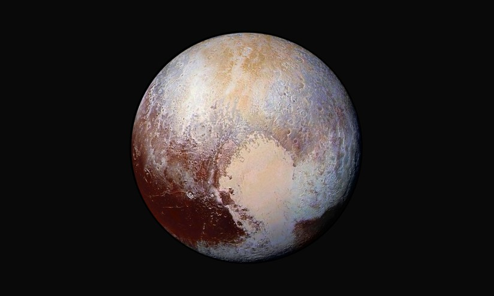

Plutone è un pianeta nano orbitante nella parte esterna del Sistema solare, nella fascia di Kuiper. Scoperto da Clyde Tombaugh nel 1930, è stato considerato per 76 anni il nono pianeta del Sistema solare. Dal 1992 il suo status di pianeta venne messo in discussione in seguito alla scoperta di diversi oggetti di dimensioni simili nella fascia di Kuiper. La scoperta di Eris nel 2005, un pianeta nano del disco diffuso che è il 27% più massiccio di Plutone, ha portato l'Unione Astronomica Internazionale l'anno successivo a riconsiderare, dopo un acceso dibattito, la definizione di pianeta, e a riclassificare così Plutone come pianeta nano.

Il 14 luglio 2015, la sonda New Horizons è diventata la prima navicella spaziale a sorvolare Plutone, effettuando misure e osservazioni dettagliate del pianeta nano e delle sue lune. Nel settembre 2016, gli astronomi hanno annunciato che la calotta bruno-rossastra che ricopre il polo nord di Caronte (una delle sue cinque lune) è composta da toline, macromolecole organiche che possono essere ingredienti per la vita, e che, rilasciate dall'atmosfera di Plutone, precipitano su Caronte a 19 000 km di distanza.
Utilizzando i dati inviati dalla New Horizons e i modelli di elevazione digitale di Plutone e la sua luna Caronte, gli scienziati hanno creato questa animazione che simula un sorvolo del pianeta nano